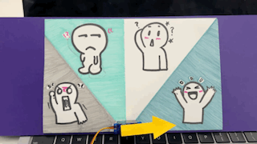
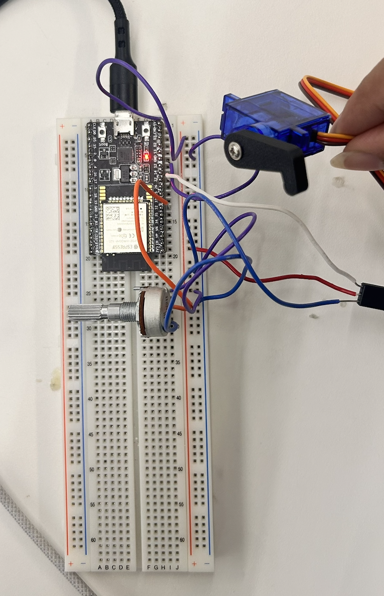

<div class="textcontainer">
<p class="margin"> </p>
<h3>Week 4: Microcontroller Programming</h3>
<h4> Mood Cue </h4>
<h5> For this assignment, we were supposed to program the Arduino to do something, so I chose one of the projects from the Arduino book, particularly the mood cue. Saying how you feel? Nah just spin the potentiometer! </h5>

<img src="./mood.png" alt="generic placeholder image" style="width: 300px; height: 210px;">
<h5>I started off by hooking up a power source and creating a common ground to work with on my breadboard. The idea was fairly simple, use a potentiometer to control the movement of the servo, to rotate it in both directions at a 180 degree angle.</h5>
<img src="./c1.png" alt="generic placeholder image" style="width: 300px; height: 210px;">

<h5> Challenges faced: I spent around 40 minutes trying to upload the code but it would always result in an error. Shoutout to Bobby for helping fix this, but it took me a while to understand that the problem was the port that I plugged the microcontroller into, out of the two on my laptop one seems to not work which is weird. </h5>
<h7>I think this project could be used by many, especially those who suck at showing their feelings, just spin the potentiometer! I think that creating this mini assignment inspired me to think of a new project idea, one that has to do with assessing person’s mood, in a more intricate and functional way of course. </h7>
<h8> Here is a circuit I created that embodies my moodcue: </h8>
<h9>I also played around with some LED lights as well, and I was able to make them work in a similar manner to a traffic light (the middle LED was not working for some reason). </h9>
<h4>Here is a code snippet:</h4>
<h4> <pre><code class="language-arduino">
#include <ESP32Servo.h>
Servo myServo;
// potentiometer variables
const int potPin = 32;
const int servoPin = 26;
int potVal;
int angle;
void setup() {
// put your setup code here, to run once:
myServo.attach(servoPin);
Serial.begin(9600);
}
void loop() {
// put your main code here, to run repeatedly:
potVal = analogRead(potPin);
Serial.print("potVal :");
Serial.print(potVal);
angle = map(potVal, 0, 1023, 0, 179);
Serial.print(", angle: ");
Serial.println(angle);
myServo.write(angle);
}
</code></pre> </h4>
</div>